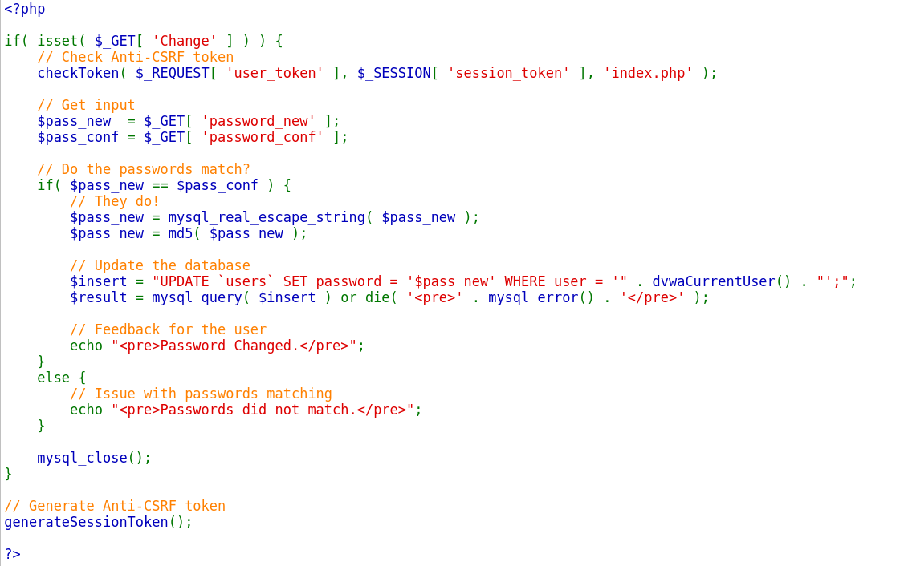

CSRF 공격 대응은 2가지로 나뉜다
1. 요청메시지의 레퍼러(Referer) 헤더를 검사해 웹 메일이나 타 사이트에서 피싱을 당해 전송되는 요청을 실행하지 않는다.
레페러(Referer)
- 이전 웹 페이지의 주소를 알려주는 헤더임 즉, 정상적인 요청인지 아닌지를 판별할 수 있다.
2. CSRF 토큰을 사용한다. 쿠키 외에 공격자가 추측할 수 없는 값이 요청 메시지의 파라미터 등에 포함되어 있으면 공격자는 CSRF 공격을 성공시키기 어려워짐
랜덤 한 값 = 토큰이라 칭함
1. 웹 애플리케이션이 CSRF 토큰을 매 응답마다 랜덤 하게 생성하여 히든 폼 필드 등을 통해 클라이언트로 보낸다.
2. 클라이언트는 이전 응답 메시지에 포함된 토큰 값을 다음 요청 시 포함시켜 전송함
3. 웹 애플리케이션이 CSRF 토큰 값을 검사하면, 정상적인 과정을 통해 전달된 요청인지 확인함
다음은 하이레벨 CSRF 토큰이 있는 소스코드이다.

여기에 보면 user_token 이 있는데. 이는 랜덤 하게 생성한 CSRF 토큰 역할을 함
동작원리는 패스워드 변경 요청을 보내면 CSRF 토큰이 user_token 파라미터로 전송됨.
CSRF 토큰이 자기가 생성한 문자열이 맞는지 확인하여 정상적인지 아닌지를 구별이 가능하다.
이 방법으로 CSRF 공격에 대응이 가능
단 한 사이트에 XSS취약점과 CSRF취약점이 동일하게 나타난다면 이를 조합해 위의 소스코드를 무용지물로 만들 수 있다.
왜냐면 자바스크립트를 사용해 XSS 공격으로 레페러 헤더 검사를 우회할 수 있고 CSRF 토큰을 알아내는 것 또한 가능하다.
이는 해킹대회 (CTF)에서 풀어본 경험이 있다.
기억나는 대로 적어보자면
- 게시판에 XSS 취약점 코드를 넣고 쿠키세션을 추출하는데 이를 활용해 관리자 권한을 얻기 위해 token이 admin 토큰으로 우회해서 관리자 게시판에 침투하는 것이었다. 버프스위트로 이를 조작할 수 있다. 참 무서운 도구다.
아무튼 이러한 조합으로 막대한 피해가 초래할 수 있다.
CSRF 공격 대응에 가장 좋은 방법은 기존의 패스워드를 한 번 더 입력받도록 하는 것이다.
실제 웹사이트에서 패스워드를 수정할 때 패스워드 확인창이 있을 것이다 이는 CSRF 공격을 막기 위한 방어책이다.
- 기존의 패스워드를 알 수 없게 되어 CSRF 공격을 방어할 수가 있게 되는 것이다.